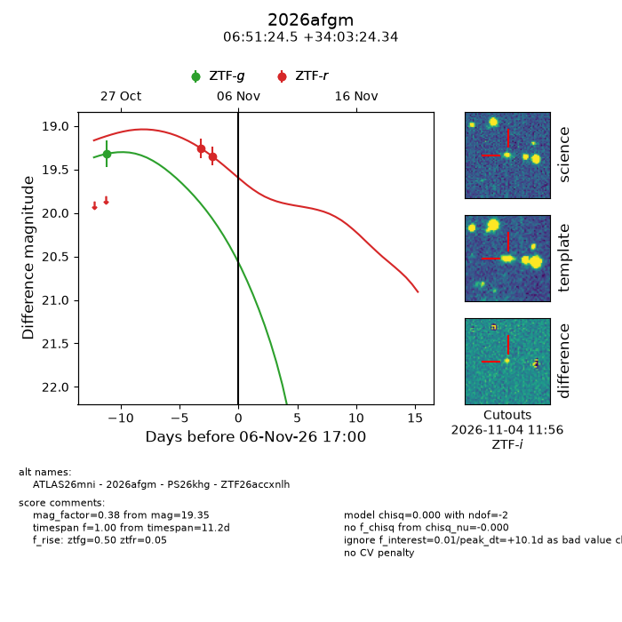
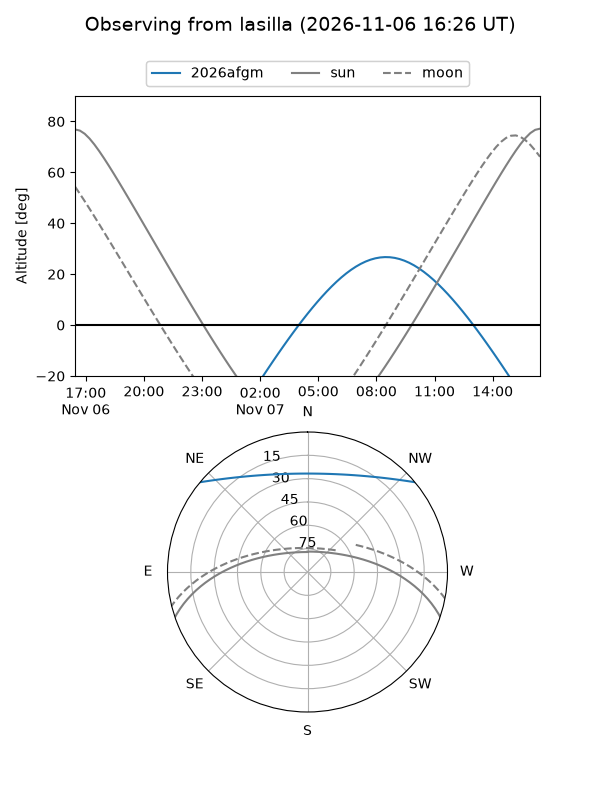
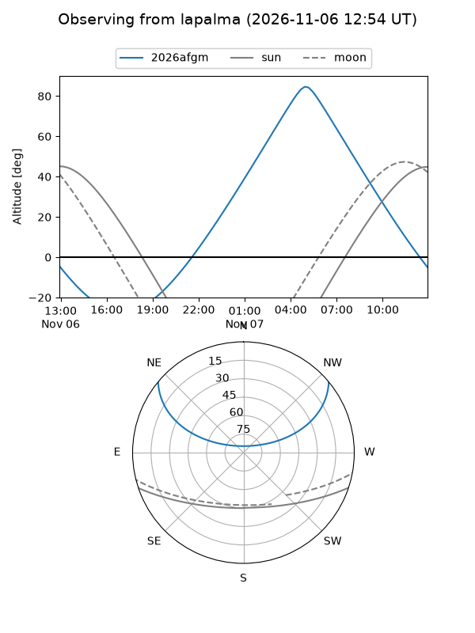
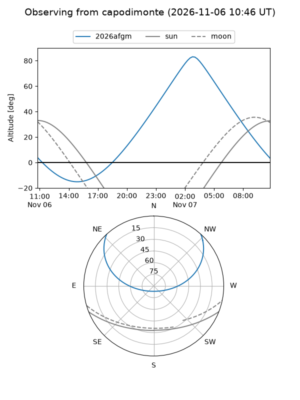
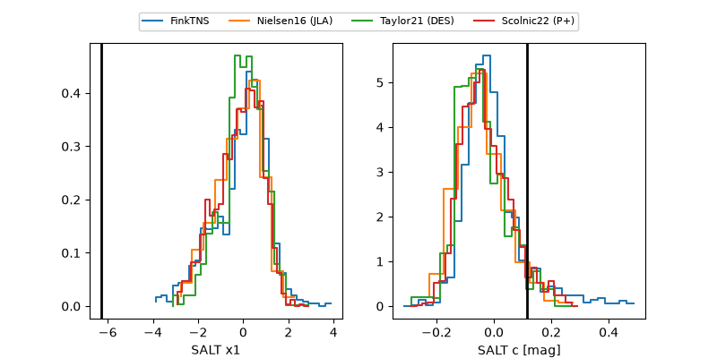

2026afgm
Target 2026afgm at 2026-11-06 17:06
Aliases and brokers:
FINK-ZTF: ztf.fink-portal.org/ZTF26accxnlh
Lasair-ZTF: lasair-ztf.lsst.ac.uk/objects/ZTF26accxnlh
ALeRCE-ZTF: alerce.online/object/ZTF26accxnlh
YSE-PZ: ziggy.ucolick.org/yse/transient_detail/2026afgm
TNS name: wis-tns.org/object/2026afgm
Direct TNS query: direct search
alt names
ZTF26accxnlh (ztf,fink_ztf)
2026afgm (tns,yse)
ATLAS26mni (atlas)
PS26khg (panstarrs)
Coordinates:
equatorial (ra, dec) = 102.8521,+34.05676
equatorial (HMS+DMS) = 06:51:24.49,+34:03:24.34
galactic (l, b) = (181.8988,+14.78909)
Flags:
peak dt: +10.1
Photometry:
last ztfg=19.32, ztfr=19.35
1 ztfg, 2 ztfr detections
Lightcurve

Visibility



Additional plots
